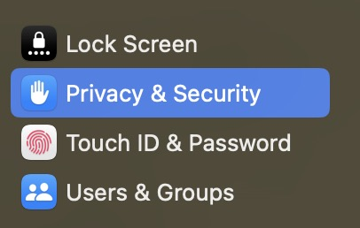
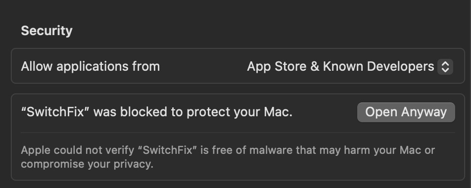

Install SwitchFix
Free. macOS 13 or later. Apple Silicon and Intel.
Open Terminal with Command + Space. Paste the command and press Return.
Run without sudo. The installer puts the app in Applications. macOS may block the first launch because this free build is not notarized by Apple. Follow step 2 instead of reinstalling.
Prefer a download? Get the latest ZIP for your Mac, extract it, and move SwitchFix to Applications.
Let macOS open the app
Already open? Skip to typing access.
“SwitchFix” Not Opened? Click Done, not Move to Bin.
Approve only the SwitchFix release you intentionally downloaded and trust.
-
Open System Settings. Choose Privacy & Security in the left sidebar.
Open Privacy & SecurityShortcut for your Mac. You can also open it manually.

-
In the right pane, scroll down past the permission lists to Security. Find the SwitchFix warning and click Open Anyway.

Leave “Allow applications from” unchanged. Click only Open Anyway beside SwitchFix. View full-size screenshot. Authenticate if asked, then click Open in the confirmation. If needed, open Finder → Applications → SwitchFix again.
Can't find Open Anyway?
Open SwitchFix from Applications again, click Done, then return here and scroll down to Security. The approval option is available for about an hour after a blocked launch.
If you chose Move to Bin, install it again first. On a managed work or school Mac, ask your administrator if approval is disabled.
Do not disable Gatekeeper. These steps are for an unverified-app warning, not a malware detection. Apple's guidance.
Allow typing access
Now use SwitchFix's setup window, not this webpage.
- For Accessibility, click Open Settings + Show App. Enable SwitchFix in the Settings pane that opens. If it is missing, click + and add it from Applications.
- Only if Keyboard input access is Unavailable: use the setup window's Input Monitoring button and enable SwitchFix there. If access already says Available, skip this—even if there is no Input Monitoring entry.
- Restart SwitchFix if macOS asks. Return to the app and click Check Again. If prompted, add two supported layouts in System Settings → Keyboard → Text Input → Edit.
Permission is on, but access is still unavailable?
Updates can leave a stale entry. In the affected permission pane, remove the old SwitchFix with −, add the current app from Applications with +, and enable it. Restart if asked, then click Check Again in SwitchFix.
Need a visual example?
Optional practice. This page cannot read or change your Mac's permissions.
See the Accessibility switch
See Input Monitoring, if needed
Preview a text correction
Preview a correction
This browser demo does not test your installed app. Type a sample and press Space to preview a correction.